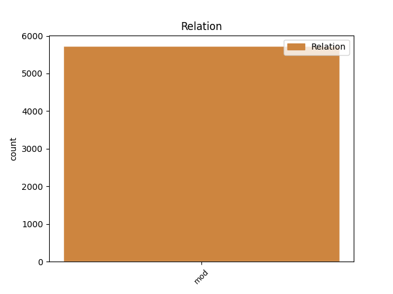
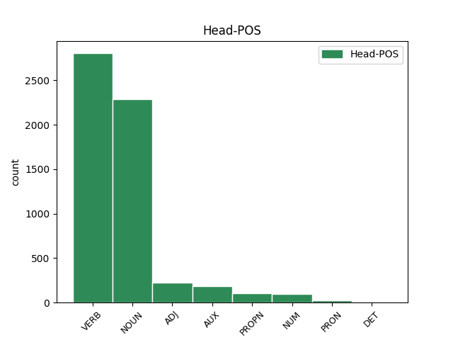
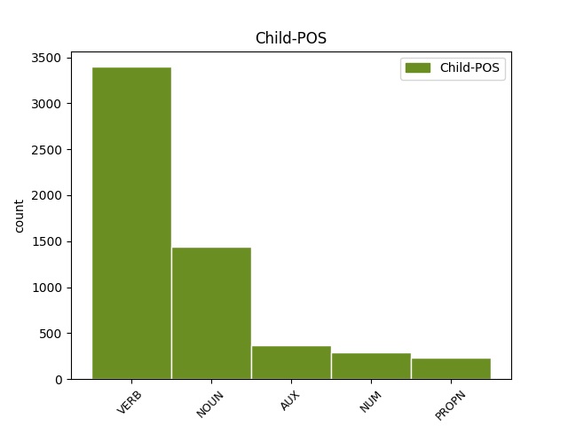

Distribution of features within this leaf



Agreement Rules sorted by frequency.
- When the dependent token is the modifer(mod) of the head token, and the dependent token is VERB.
1 Аже _ _ _ _ 0 _ _ _
2 соколъ _ _ _ _ 0 _ _ _
3 къ _ _ _ _ 0 _ _ _
4 гнѣзду _ _ _ _ 0 _ _ _
5 летитъ _ _ _ _ 0 _ _ _
6 соколича _ _ _ _ 0 _ _ _
7 рострѣляевѣ _ _ _ _ 0 _ _ _
8 своими _ _ _ _ 0 _ _ _
9 злачеными златити VERB V- Case=Ins|Gender=Fem|Number=Plur|Strength=Weak|Tense=Past|VerbForm=Part|Voice=Pass 10 mod _ ref=204
10 стрѣлами стрѣла NOUN Nb Case=Ins|Gender=Fem|Number=Plur 0 _ _ _
1 уношу уноша NOUN Nb Case=Acc|Gender=Masc|Number=Sing 0 _ _ _
2 князю кънязь NOUN Nb Case=Dat|Gender=Masc|Number=Sing 1 mod _ ref=197
3 Ростиславу _ _ _ _ 0 _ _ _
4 затвори _ _ _ _ 0 _ _ _
5 Днѣпрь _ _ _ _ 0 _ _ _
6 темнѣ _ _ _ _ 0 _ _ _
7 березѣ _ _ _ _ 0 _ _ _
1 Тіи _ _ _ _ 0 _ _ _
2 бо _ _ _ _ 0 _ _ _
3 два _ _ _ _ 0 _ _ _
4 храбрая _ _ _ _ 0 _ _ _
5 Святъславлича _ _ _ _ 0 _ _ _
6 Игорь _ _ _ _ 0 _ _ _
7 и _ _ _ _ 0 _ _ _
8 Всеволодъ _ _ _ _ 0 _ _ _
9 уже _ _ _ _ 0 _ _ _
10 лжу лъжа NOUN Nb Case=Acc|Gender=Fem|Number=Sing 0 _ _ _
11 убуди _ _ _ _ 0 _ _ _
12 которую _ _ _ _ 0 _ _ _
13 то _ _ _ _ 0 _ _ _
14 бяше быти AUX V- Aspect=Imp|Mood=Ind|Number=Sing|Person=3|Tense=Past|VerbForm=Fin|Voice=Act 10 mod _ ref=88
15 успилъ _ _ _ _ 0 _ _ _
16 отецъ _ _ _ _ 0 _ _ _
17 ихъ _ _ _ _ 0 _ _ _
18 Святъславь _ _ _ _ 0 _ _ _
19 грозный _ _ _ _ 0 _ _ _
20 великый _ _ _ _ 0 _ _ _
21 кіевскый _ _ _ _ 0 _ _ _
22 грозою _ _ _ _ 0 _ _ _
1 утръ _ _ _ _ 0 _ _ _
2 же _ _ _ _ 0 _ _ _
3 воззни _ _ _ _ 0 _ _ _
4 с _ _ _ _ 0 _ _ _
5 три трие NUM Ma Case=Acc|Gender=Masc|Number=Plur 6 mod _ ref=156
6 кусы кусъ NOUN Nb Case=Acc|Gender=Masc|Number=Plur 0 _ _ _
1 и _ _ _ _ 0 _ _ _
2 потече _ _ _ _ 0 _ _ _
3 къ _ _ _ _ 0 _ _ _
4 лугу лугъ NOUN Nb Case=Dat|Gender=Masc|Number=Sing 0 _ _ _
5 Донца доньць PROPN Ne Case=Gen|Gender=Masc|Number=Sing 4 mod _ ref=190
Disagree Examples:
1 за _ _ _ _ 0 _ _ _
2 млт҃вѹ молитва NOUN Nb Case=Acc|Gender=Fem|Number=Sing 0 _ _ _
3 ст҃хъ _ _ _ _ 0 _ _ _
4 ѡц҃ь отьць NOUN Nb Case=Gen|Gender=Masc|Number=Plur 2 mod _ ref=1
5 наших _ _ _ _ 0 _ _ _
6 г҃и _ _ _ _ 0 _ _ _
7 їс҃е _ _ _ _ 0 _ _ _
8 х҃е _ _ _ _ 0 _ _ _
9 сн҃е _ _ _ _ 0 _ _ _
10 бж҃їи _ _ _ _ 0 _ _ _
11 помилѹи _ _ _ _ 0 _ _ _
12 мѧ _ _ _ _ 0 _ _ _
13 раба _ _ _ _ 0 _ _ _
14 своего _ _ _ _ 0 _ _ _
15 грѣш꙽наго _ _ _ _ 0 _ _ _
16 афонасьѧ _ _ _ _ 0 _ _ _
17 микитина _ _ _ _ 0 _ _ _
18 сна _ _ _ _ 0 _ _ _
1 а _ _ _ _ 0 _ _ _
2 ꙗзъ _ _ _ _ 0 _ _ _
3 ждалъ _ _ _ _ 0 _ _ _
4 в _ _ _ _ 0 _ _ _
5 новѣгородѣ _ _ _ _ 0 _ _ _
6 двѣ дъва NUM Ma Case=Acc|Gender=Fem|Number=Dual 0 _ _ _
7 недли недѣля NOUN Nb Case=Gen|Gender=Fem|Number=Sing 6 mod _ ref=2
8 посла _ _ _ _ 0 _ _ _
9 татарьскаго _ _ _ _ 0 _ _ _
10 ширвашина _ _ _ _ 0 _ _ _
11 асамъ _ _ _ _ 0 _ _ _
12 бѣга _ _ _ _ 0 _ _ _
1 а _ _ _ _ 0 _ _ _
2 кречатовъ кречатъ NOUN Nb Case=Gen|Gender=Masc|Number=Plur 5 mod _ ref=2
3 ѹ _ _ _ _ 0 _ _ _
4 него _ _ _ _ 0 _ _ _
5 девѧносто девяносто NUM Ma Case=Nom|Gender=Neut|Number=Sing 0 _ _ _
1 и _ _ _ _ 0 _ _ _
2 пошли _ _ _ _ 0 _ _ _
3 есмѧ _ _ _ _ 0 _ _ _
4 к _ _ _ _ 0 _ _ _
5 дербеньти _ _ _ _ 0 _ _ _
6 двѣма дъва NUM Ma Case=Ins|Gender=Masc|Number=Dual 7 mod _ ref=3
7 сѹды судъ NOUN Nb Case=Ins|Gender=Masc|Number=Plur 0 _ _ _
1 и _ _ _ _ 0 _ _ _
2 билъ _ _ _ _ 0 _ _ _
3 есми _ _ _ _ 0 _ _ _
4 челѡм _ _ _ _ 0 _ _ _
5 василью _ _ _ _ 0 _ _ _
6 папинѹ _ _ _ _ 0 _ _ _
7 да _ _ _ _ 0 _ _ _
8 послѹ посълъ NOUN Nb Case=Dat|Gender=Masc|Number=Sing 0 _ _ _
9 ширвашинѹ _ _ _ _ 0 _ _ _
10 асан _ _ _ _ 0 _ _ _
11 бегѹ _ _ _ _ 0 _ _ _
12 что _ _ _ _ 0 _ _ _
13 есмѧ быти AUX V- Mood=Ind|Number=Plur|Person=1|Tense=Pres|VerbForm=Fin|Voice=Act 8 mod _ ref=4
14 с _ _ _ _ 0 _ _ _
15 нимъ _ _ _ _ 0 _ _ _
16 пришли _ _ _ _ 0 _ _ _
17 чтобы _ _ _ _ 0 _ _ _
18 сѧ _ _ _ _ 0 _ _ _
19 печаловалъ _ _ _ _ 0 _ _ _
20 ѡ _ _ _ _ 0 _ _ _
21 людех _ _ _ _ 0 _ _ _
22 что _ _ _ _ 0 _ _ _
23 их _ _ _ _ 0 _ _ _
24 поимали _ _ _ _ 0 _ _ _
25 под _ _ _ _ 0 _ _ _
26 тархы _ _ _ _ 0 _ _ _
27 каитаки _ _ _ _ 0 _ _ _